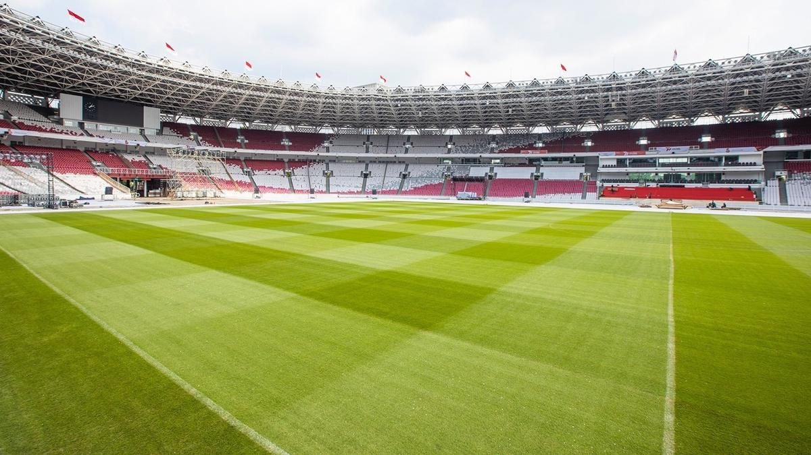
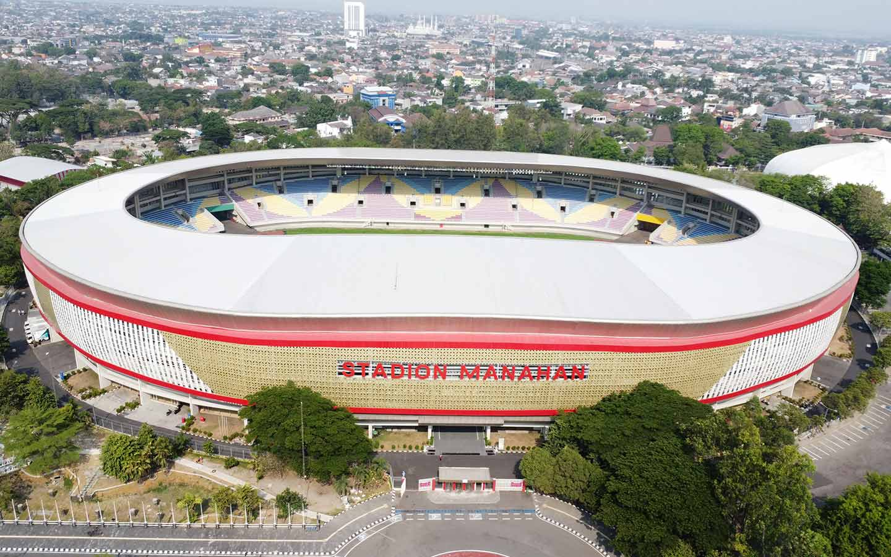

Stadium Lokal Pilihan Terbaik
Untuk Menonton SepakBola Lokal
Temukan pengalaman menonton sepak bola yang seru di stadion-stadion lokal
terbaik dengan fasilitas modern dan atmosfer yang luar biasa.
Harga Terjangkau
Kami menawarkan harga yang kompetitif tanpa
mengurangi kualitas layanan, sehingga Anda bisa menikmati
fasilitas terbaik dengan biaya yang bersahabat.
Sudah Standar FIFA
Lapangan telah memenuhi standar FIFA, memberikan pengalaman bermain
yang optimal dengan kualitas rumput dan fasilitas terbaik.
Aman dan Ramah
Kami mengutamakan keamanan dan kenyamanan, menyediakan
lingkungan yang bersih, ramah keluarga, serta fasilitas
lengkap untuk mendukung aktivitas Anda.

Stadium Gelora Bung Karno Senayan
Stadion Gelora Bung Karno (GBK) adalah stadion terbesar di Indonesia
yang terletak di kawasan Senayan, Jakarta. Berstandar internasional dengan
kapasitas lebih dari 77.000 penonton, GBK menjadi venue utama untuk berbagai
ajang olahraga, konser, dan acara nasional. Dilengkapi dengan fasilitas modern,
stadion ini menjadi simbol kebanggaan olahraga Indonesia.
Jakarta internasional Stadium
Jakarta International Stadium (JIS) adalah stadion modern berstandar internasional
yang terletak di Jakarta. Dengan kapasitas lebih dari 82.000 penonton, JIS dilengkapi
dengan atap yang dapat dibuka dan fasilitas canggih untuk mendukung berbagai acara
olahraga serta hiburan.
Stadium Maguwo harjo
Stadion Maguwoharjo adalah stadion sepak bola yang terletak di Sleman, Yogyakarta.
Stadion ini merupakan markas dari PSS Sleman dan dikenal dengan atmosfer suporter yang luar biasa.
Dengan kapasitas sekitar 31.700 penonton, Maguwoharjo
memiliki desain tribun yang dekat dengan lapangan, memberikan pengalaman menonton yang lebih intens.
Stadion ini juga dilengkapi dengan fasilitas modern dan sering menjadi tuan rumah berbagai
pertandingan nasional maupun internasional.
Stadium Gelora Bung Tomo
Stadion Gelora Bung Tomo (GBT) adalah markas dari Persebaya Surabaya yang terletak di Surabaya,
Jawa Timur. Stadion ini memiliki kapasitas lebih dari 45.000 penonton dan merupakan
salah satu stadion terbesar di Indonesia. Dilengkapi dengan fasilitas modern dan sistem
pencahayaan berkualitas tinggi, GBT sering menjadi venue untuk pertandingan nasional dan internasional.
Suasana di stadion ini semakin hidup dengan dukungan fanatik dari Bonek, suporter setia Persebaya.

Stadium Manahan Solo
Stadion Manahan adalah stadion berstandar internasional yang terletak di Solo, Jawa Tengah.
Dengan kapasitas sekitar 20.000 penonton, stadion ini menjadi markas dari Persis Solo dan sering
digunakan untuk berbagai pertandingan nasional serta internasional. Setelah direnovasi,
Stadion Manahan dilengkapi dengan fasilitas modern, termasuk rumput berkualitas FIFA dan
pencahayaan yang lebih baik. Stadion ini juga dikenal sebagai "Mini GBK" karena desainnya yang
megah dan nyaman bagi penonton.
Stadium Jatidiri
Stadion Jatidiri adalah markas dari PSIS Semarang yang terletak di Semarang, Jawa Tengah.
Stadion ini memiliki kapasitas sekitar 25.000 penonton dan telah mengalami renovasi besar untuk
memenuhi standar modern. Dilengkapi dengan fasilitas lengkap seperti tribun tertutup,
rumput berstandar internasional, dan sistem pencahayaan yang memadai, Stadion Jatidiri
menjadi kebanggaan masyarakat Semarang serta sering digunakan untuk pertandingan nasional
maupun event olahraga lainnya.
Ingin Menonton Pertandingan SepakBola Lokal?
Beli Tiket Sekarang!